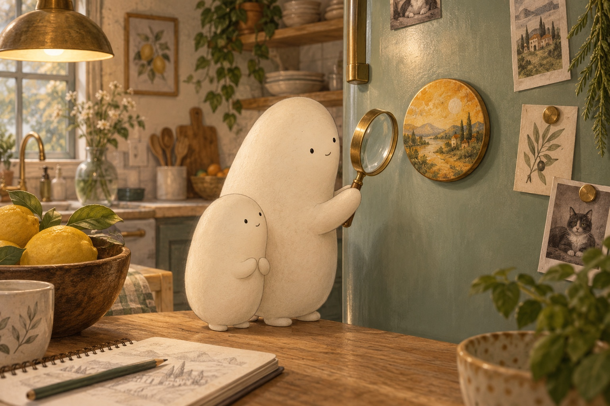

Follow the pull
Fridge Magnets

Little Wonderer noticed a round magnet on the fridge. It stayed in place without a hand holding it. A magnet is an object that can pull certain metals toward it. Little brought the magnifier closer. “What makes it stick?” Big Wonderer stood beside Little, ready to look for clues.

Big lifted the magnet, then brought it close to the door. Little felt a tug before it touched. The magnet and the steel in this fridge door pulled toward each other. That pull helped it stick, or stay in place. A paper drawing stayed between them, even though the paper itself was not magnetic.

Would the same magnet stick everywhere? Big held up a wood board over a tray. The magnet began to slide, moving down the smooth surface. It did not stick to the plastic lid, paper, or cloth either. Shiny aluminum foil did not hold it. “Metal is not one kind of stuff,” Little noticed.
- magnet
- an object that can pull on certain metals
- stick
- stay in place against a surface
- pull
- a force that draws something closer
- metal
- a kind of material, such as iron, steel, aluminum, or copper
- fridge
- a machine that keeps food cool
- slide
- move along a surface